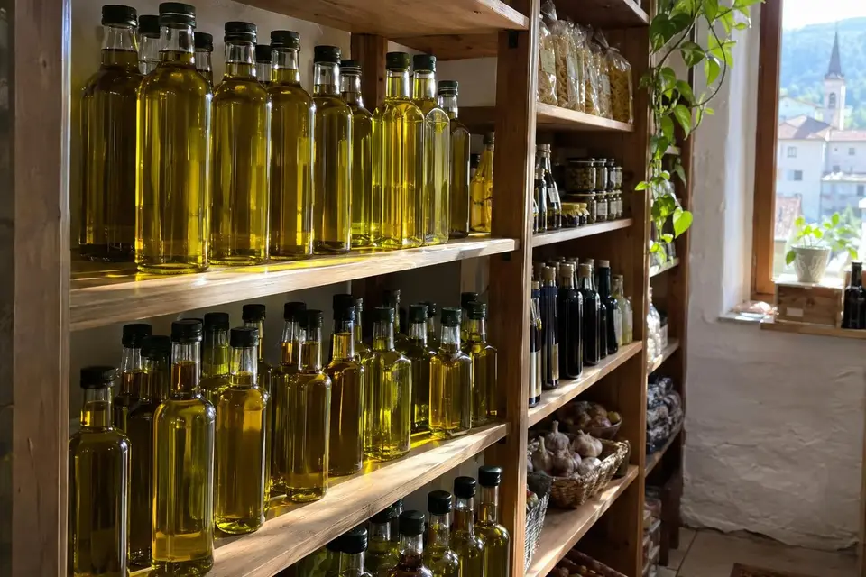
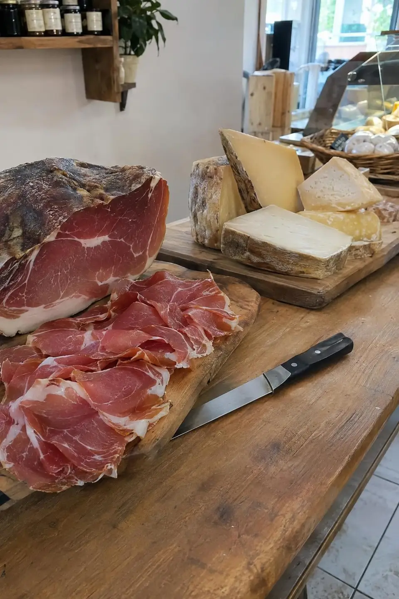
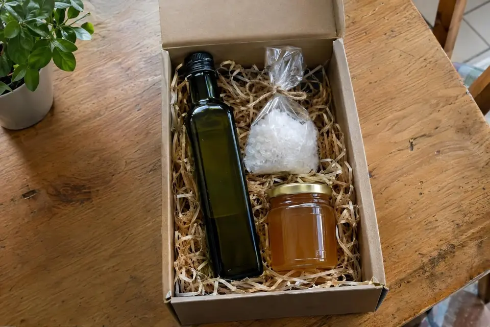
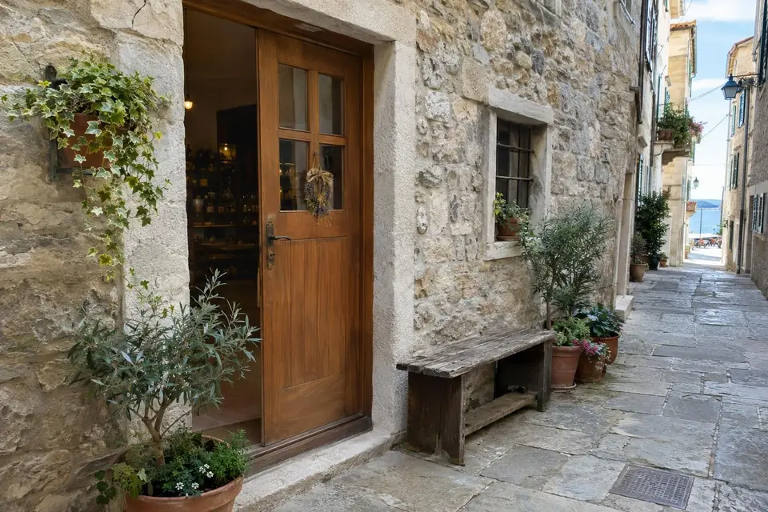

Koper, staro mestno jedro
Istrske dobrote manjših pridelovalcev
Oljčno olje, piranska sol, med, pršut in še več. Prodajamo samo izdelke manjših pridelovalcev iz slovenske Istre in Krasa.

Iz naše police
Nekaj izdelkov iz trgovine
Cene so navedene tam, kjer jih imamo potrjene. Za ostale nas pokličite ali se oglasite v trgovini.
Ekstra deviško oljčno olje
Izdelek manjših pridelovalcev iz slovenske Istre in Krasa.

Piranska sol

Pršut in siri


Darila
Darilni paketi po vaši želji
Paket sestavimo skupaj z vami in ga lepo zavijemo. Naročilo po telefonu ali e-pošti, prevzem v trgovini.
Za podjetja pripravimo poslovna darila v večjih količinah.

Kje smo
Trgovina v starem mestnem jedru
Najdete nas v kamniti hiši v ozki ulici starega Kopra. Pridite po olje, sol ali darilo.